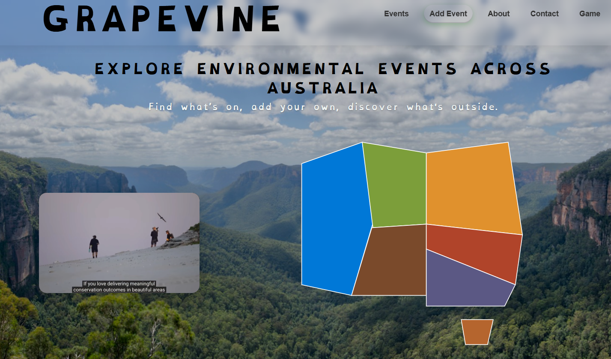

GRAPEVINE — Environmental Events Australia
GRAPEVINE is a website I designed and developed to make it easier for people across Australia to discover environmental, nature and community events in their local area.
I created the project because many small, free and low-cost environmental activities can be difficult to discover when information is spread across councils, community organisations and individual event pages.
The website brings these events together into one place and allows organisers and community members to contribute events. I developed the project myself, from the original concept through to the functioning website.

The project combines my interests in environmental education, community engagement and digital technology, while giving me practical experience in web development, information organisation, user experience and maintaining a live website.